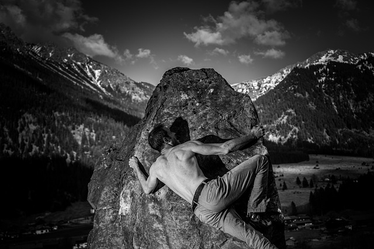

What is Bouldering?
Bouldering is a form of climbing where the climber doesn’t need to wear a harness. Normally they will have their shoes, some chalk, and a crash pad, and not much else. There is also gym bouldering where you don’t even need to have a crash pad, as the floor is padded enough to protect the climber from any falls. The main differences between rope climbing and bouldering is that bouldering normally doesn’t require as much endurance, but needs more power and technique. Many people will call someone who only boulders a “boulder bro” because normally it is people who care about the muscley moves they get to use when bouldering.

History of Bouldering
Bouldering started in Fontainebleau, France as a way for people to train to climb the Alps in the early 1900s. It wasn’t until about 40 years later that Pierre Allain realized how bouldering was so different from traditional climbing. He developed climbing shoes to help grip the rock better with better quality rubber soles. It also started developing as its own sport around the same time in Yosemite Valley in the United States. In the 1970s they started using crash pads to protect from falls and to be able to climb harder and harder problems. In the 1980s bouldering really blew up in the UK where there are now tons of gyms and crags to explore. Now it is a world wide sport that you can find just about anywhere in the world.